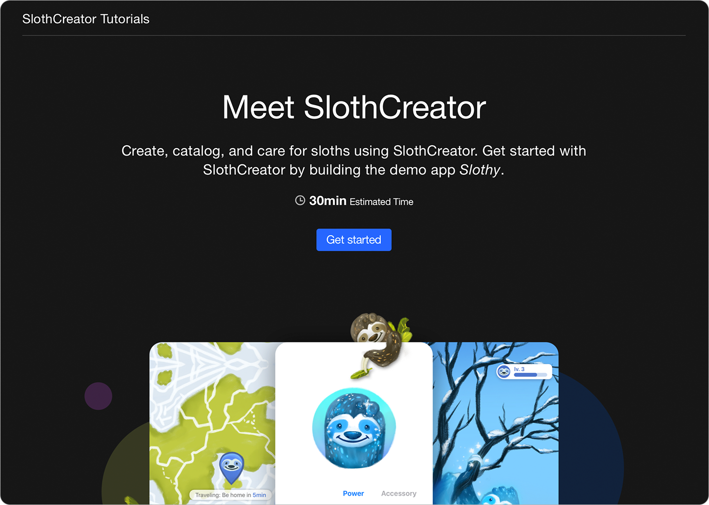

API Collection
Interactive Tutorials
Teach developers your Swift APIs through step-by-step, interactive content.
Overview
Use tutorials to deliver interactive documentation for your Swift frameworks and packages. Each tutorial augments your reference documentation by guiding readers through coding exercises that show how to build apps and projects that use your APIs in realistic ways.

You write tutorial content in Markdown, and use directives to define specific types of pages and elements, like introductions, sections, steps, and assessments. Then, you run the DocC compiler to render your tutorial in a rich, interactive learning format.
Topics
Essentials
Building an Interactive Tutorial
Construct a step-by-step guided learning experience for your Swift framework or package.
Adding a Table of Contents
@Tutorials(...) Displays a table of contents page for readers to navigate the pages of an interactive tutorial.
Adding Tutorial Pages
@Tutorial(time: Int, projectFiles : ResourceReference) Displays a tutorial page that teaches your Swift framework or package APIs through interactive coding exercises.
@Article(...) Displays a tutorial article page that teaches a conceptual topic about your Swift framework or package.
Shared Syntax
Shared Directives
Directives supported by multiple directives in interactive tutorials.
See Also
Documentation Types
API Documentation
Teach your APIs through reference documentation you create from code comments and extension files, or create detailed articles and conceptual guides.